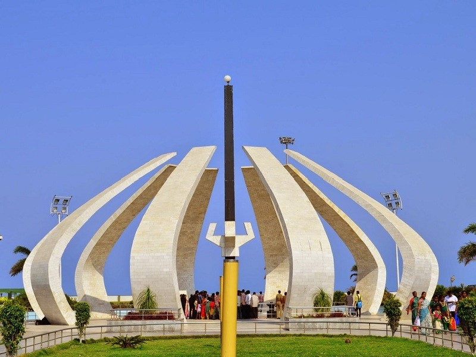
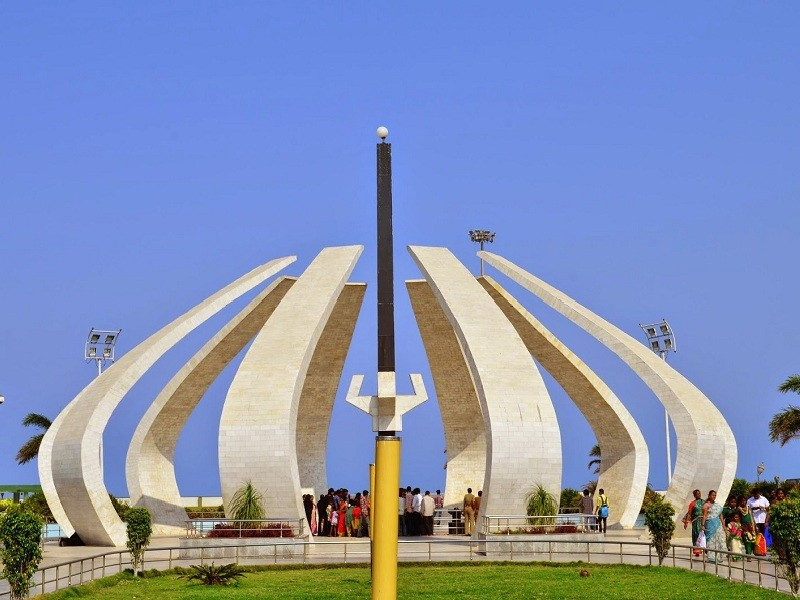

History Of Chennai
On 20 August 1639 Francis Day of the East India Company along with Damerla Venkatadri Nayak travelled to Chandragiri palace to meet the Vijayanagara King Peda Venkata Raya and to obtain a grant for a small strip of land in the Coromandel Coast from in Chandragiri as a place to build a factory and warehouse for their trading activities. It was from Damarla Venkatadri Nayaks domain, on 22 August 1639, the piece of land lying between the river Cooum almost at the point it enters the sea and another river known as the Egmore river was granted to East India Company after deed from Vijaynagara emperor. On this piece of waste land was founded Fort St. George, a fortified settlement of British merchants, factory workers, and other colonial settlers. Upon this settlement the English expanded their colony to include a number of other European communities, new British settlements, and various native villages, one of which was named Mudhirasa pattanam. It in honor of the later village upon which the British named the entire colony and the combined city Madras. Controversially, in an attempt to revise history and justify renaming the city as Chennai, the ruling party has purged the history of the early English Madras settlements. According to the new party history, instead of being named Madras, it was named Chennai, after a village called Chennapattanam, in honour Movement, a new state of Maharashtra was created with Bombay as the capital.[29]